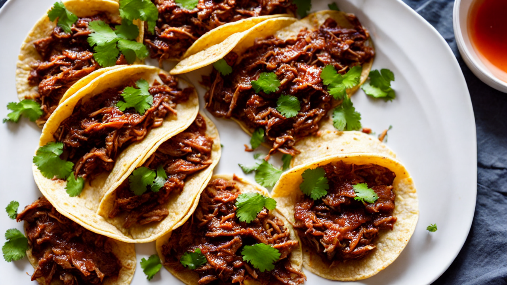
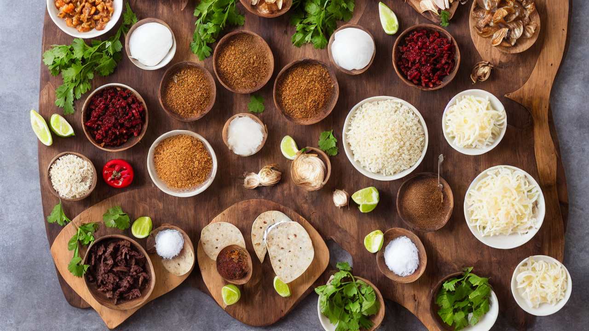
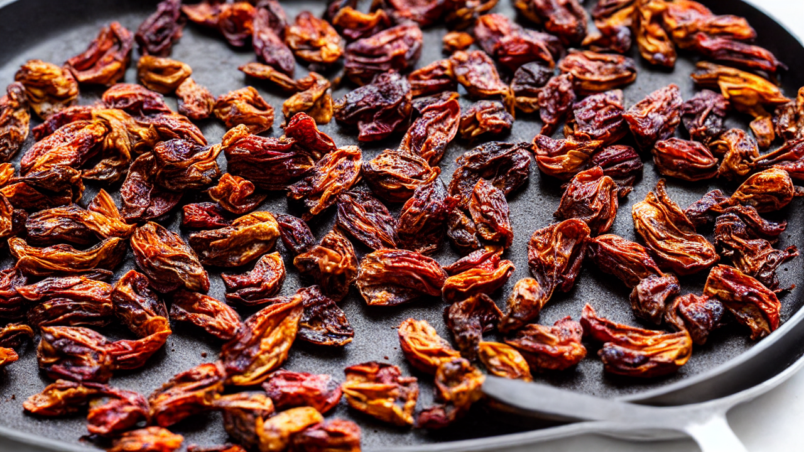
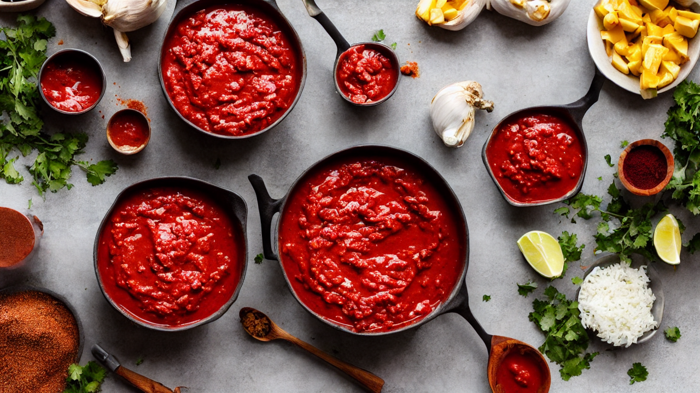
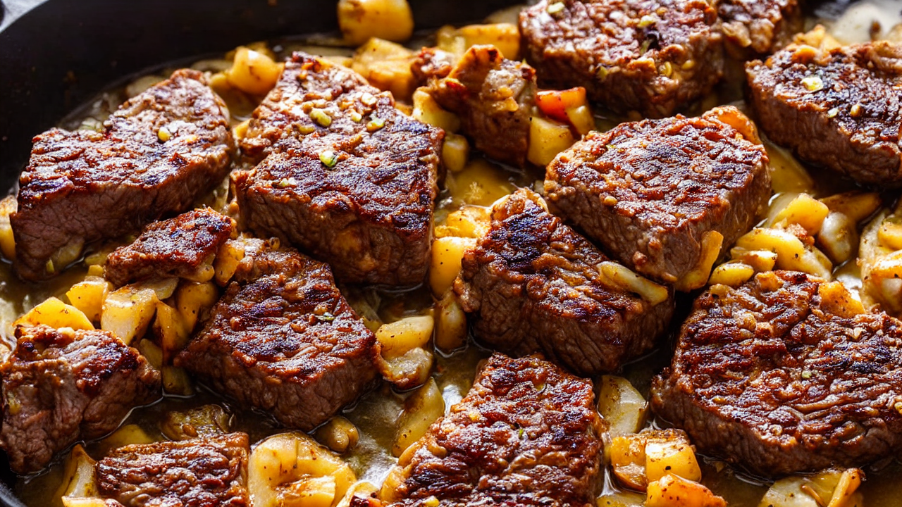
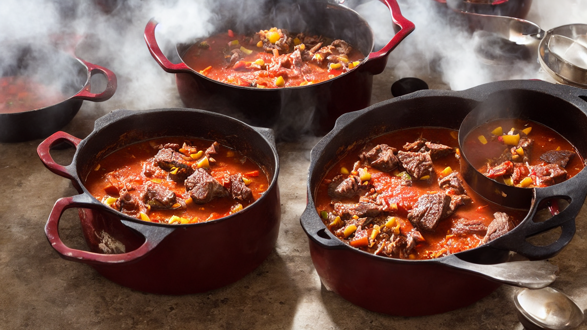
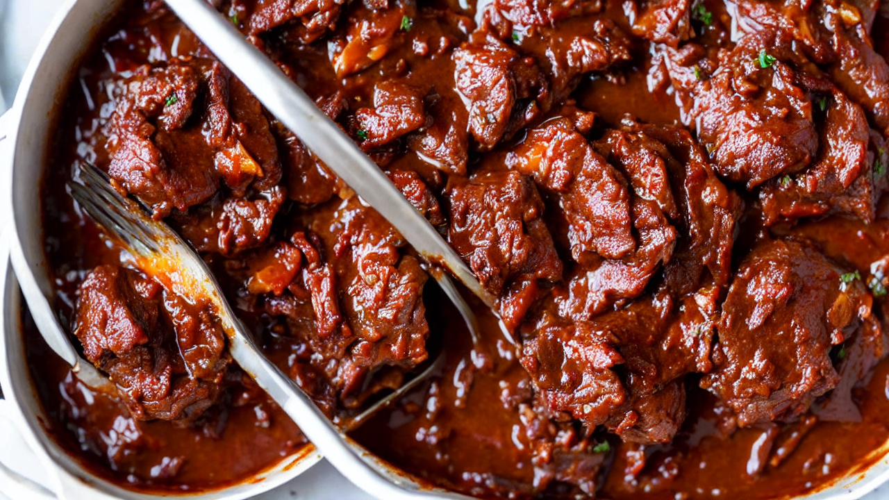
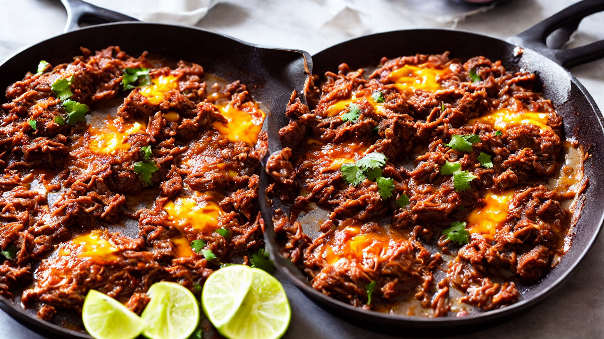
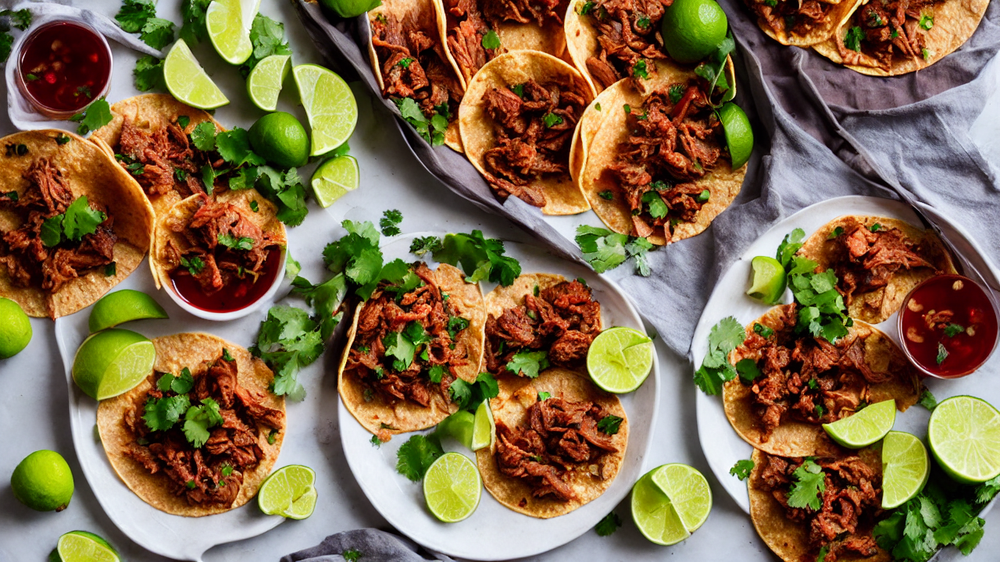
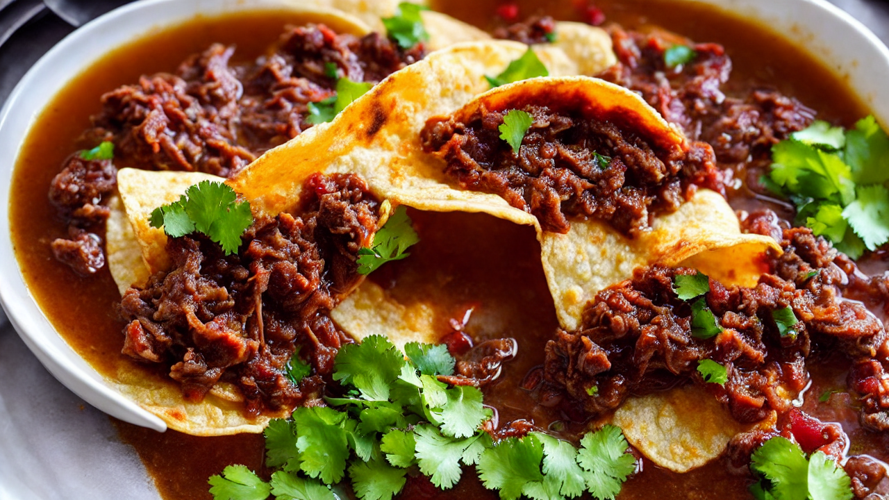

Authentic Birria Tacos | Crispy, Cheesy & Dripping with Consomme
These viral Birria Tacos are loaded with tender, slow-braised beef, melted cheese, and served with a rich consomme for dipping. Crispy tortillas, juicy meat, and explosive flavor in every bite. The ultimate Mexican street food you can make at home! #BirriaTacos
Ingredients
- 3 pounds beef chuck roast
- 5 dried guajillo chiles
- 3 ancho chiles
- one onion
- 6 garlic cloves
- cumin
- oregano
- cloves
- black pepper
- apple cider vinegar
- beef broth
- corn tortillas
- Oaxaca cheese
Instructions

These Birria Tacos broke the internet for a reason. Crispy, cheesy, and dripping with the most flavorful consomme you've ever tasted. Let's make them from scratch!

You'll need: 3 pounds beef chuck roast, 5 dried guajillo chiles, 3 ancho chiles, one onion, 6 garlic cloves, cumin, oregano, cloves, black pepper, apple cider vinegar, beef broth, corn tortillas, and Oaxaca cheese.

Toast the dried guajillo and ancho chiles in a dry skillet for 30 seconds per side until fragrant. Then soak them in hot water for 15 minutes until soft and pliable.

Blend the rehydrated chiles with onion, garlic, cumin, oregano, cloves, black pepper, and a splash of apple cider vinegar until you get a smooth, deep-red adobo sauce.

Cut the beef chuck into large chunks and season generously with salt. Sear on all sides in a hot Dutch oven until you get a deep brown crust. This is where the flavor starts.

Pour the adobo sauce over the seared beef, add 4 cups of beef broth, and bring to a simmer. Cover and braise in the oven at 325 degrees Fahrenheit for 3 hours until the meat is fall-apart tender.

Shred the tender beef with two forks right in the pot. Strain the braising liquid through a fine mesh sieve to get your consomme. Skim the fat from the top and save it for the tortillas.

Dip corn tortillas in the birria fat, then fill with shredded beef and a generous handful of Oaxaca cheese. Fold and pan-fry in a hot skillet until crispy and golden on both sides.

Serve the crispy tacos with a bowl of hot consomme on the side, topped with fresh cilantro, diced white onion, and a squeeze of lime. Dip, bite, and prepare for the best taco of your life!

Follow for more authentic Mexican recipes that will blow your mind. Drop a comment if you're team extra cheese or team extra consomme!